CC6: Entropía y Segunda Ley
Análisis profundo del concepto de entropía desde la perspectiva macroscópica (Clausius) y microscópica (Boltzmann), con enfoque en su significado como medida de desorden, la irreversibilidad y las implicaciones de la segunda ley.
Temas que cubre
- Definición macroscópica: $dS = \bar{\delta}Q_{rev}/T$ y la desigualdad de Clausius $dS \geq \bar{\delta}Q/T$
- Definición estadística de Boltzmann: $S = k_B\ln\Omega$
- Conexión entre las dos definiciones para el gas ideal
- Producción de entropía en procesos irreversibles: $\Delta S_{univ} > 0$
- Entropía de mezcla: $\Delta S_{mix} = -Nk_B\sum_i x_i\ln x_i$
- Tercera ley de la termodinámica: $S \to 0$ cuando $T \to 0$ (cristal perfecto)
Conceptos clave
Entropía de Clausius
$dS = \bar{\delta}Q_{rev}/T$ define $S$ como función de estado a través de procesos reversibles. La desigualdad de Clausius $\oint \bar{\delta}Q/T \leq 0$ para cualquier ciclo establece que $S$ nunca decrece en un sistema aislado: $\Delta S_{univ} \geq 0$.
Entropía de Boltzmann: $S = k_B\ln\Omega$
$\Omega$ es el número de microestados compatibles con el macroestado. El sistema tiende hacia el macroestado de mayor $\Omega$ (mayor entropía) porque es estadísticamente abrumadoramente probable. La irreversibilidad es estadística, no absoluta.
Irreversibilidad y generación de entropía
Todo proceso real genera entropía: $\Delta S_{univ} = \Delta S_{sistema} + \Delta S_{entorno} > 0$. La entropía generada es una medida de la "imperfección" del proceso — la diferencia con el trabajo máximo extraíble en condiciones reversibles.
Tercera ley
El postulado de Nernst: $S \to 0$ cuando $T \to 0$ para cualquier sistema en equilibrio en su estado de mínima energía. Implica que es imposible alcanzar el cero absoluto en un número finito de pasos. También: $C_V \to 0$ cuando $T \to 0$.
Fórmulas fundamentales



Qué hay que entender
- La entropía no es "desorden" en un sentido vago — es el logaritmo del número de microestados compatibles con el macroestado. Cuantas más formas tiene el sistema de organizarse microscópicamente para dar el mismo macroestado, mayor su entropía.
- La irreversibilidad macroscópica emerge de la enorme asimetría estadística: los estados de alta entropía son exponencialmente más numerosos. Ver el gas de un lado del recipiente al otro es posible pero estadísticamente imposible ($\Omega_{un\,lado}/\Omega_{todo} \sim 2^{-N}$ con $N \sim 10^{23}$).
- $\Delta S = 0$ en un proceso reversible adiabático (isentrópico). $\Delta S > 0$ para cualquier proceso irreversible — incluso si el sistema se enfría o cede calor, la entropía del universo sube.
- La tercera ley tiene consecuencias prácticas: implica que las entropías absolutas son medibles (fijando $S = 0$ a $T = 0$) y que los coeficientes de expansión y las capacidades caloríficas deben tender a cero cuando $T \to 0$.